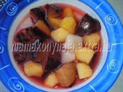

Vegyes kompót

Hozzávalók:
0,5 kg. tisztított gyümölcs (alma, körte, szilva, barack, stb.)
3 ek. kristálycukor
10 db. szegfűszeg
3 db. fahéjrúd
2 db. citromkarika
Elkészítés:
A gyümölcsöt megtisztítjuk, kisebb kockákra vágjuk, a cukorral, fahéjjal, szegfűszeggel, citrom-karikákkal, valamint annyi hideg vízzel, amennyi ellepi, felforraljuk. Annyi ideig főzzük, hogy a gyümölcs még roppanós maradjon. Lehűtve fogyasztjuk.